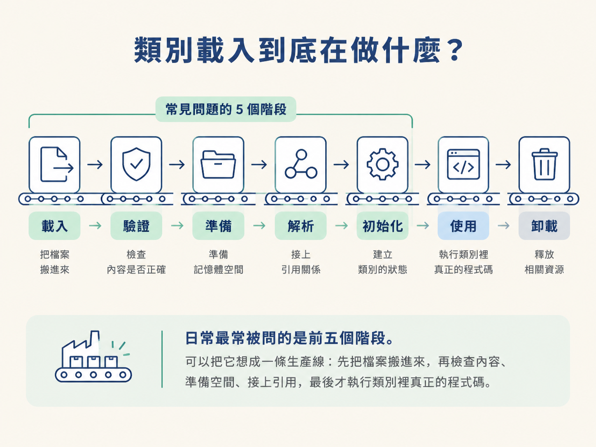
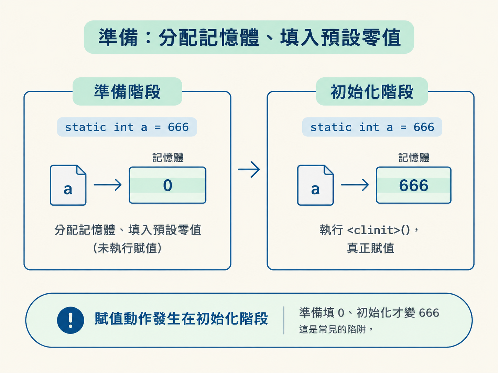
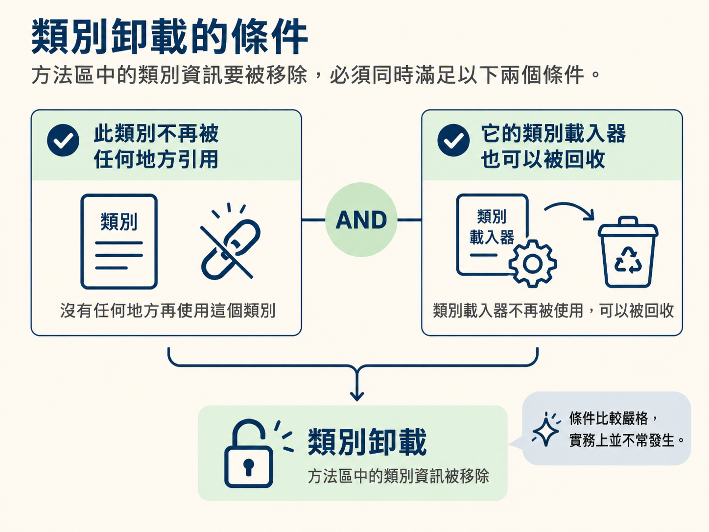

.class 到 Class 物件你可能在面試遇過這個問題：「static int a = 666;，準備階段結束後，a 是多少？」很多人會直覺回答 666，但正確答案是 0。
這個陷阱之所以常見，是因為我們很容易把「宣告靜態變數」和「執行賦值」當成同一件事。可是 JVM 把這兩件事拆在不同階段處理：前面先分配位置、填入預設值，後面才真正執行你寫的賦值程式碼。
上一節我們拆開物件的記憶體佈局，看的是「執行時物件長什麼樣」。但物件是根據類別建立的，那麼類別本身又是從哪裡來、什麼時候進入 JVM？
搞懂類別載入流程，不只是為了答對 a 是 0 還是 666。反射、動態代理、Spring 掃描 Bean，甚至 JDBC 驅動的載入，背後都依賴「類別如何被載入」這套機制。它就像後面許多框架知識共同使用的地基。
一句話說明：類別載入就是把磁碟上的 .class 二進位檔讀進記憶體，並為它建立一個代表該類別的 java.lang.Class 物件。之後，程式要取得這個類別的資訊，就會透過這個 Class 物件。
完整的生命週期共有七個階段：載入、驗證、準備、解析、初始化、使用、卸載。其中驗證、準備、解析三個階段合稱連接（Linking）。
日常最常被問的是前五個階段。可以把它想成一條生產線：先把檔案搬進來，再檢查內容、準備空間、接上引用，最後才執行類別裡真正的程式碼。

.class 檔讀進記憶體載入是整個流程中唯一需要做 I/O 的階段。JVM 會根據類別的全限定名稱，也就是完整包名加上類別名稱，例如 com.example.User，找到對應的 .class 檔，再把其中的二進位位元組流讀進記憶體。
讀取完成後，JVM 會在堆中建立一個 java.lang.Class 物件。這個 Class 物件可以視為類別資料的「存取入口」：之後你想透過反射取得類別的欄位或方法，實際上都會經過它。
這裡也可以順便分清楚兩個位置：Class 物件本身在堆中，而類別的結構描述則在方法區。兩者彼此對應，就像圖書館裡的索引卡和書籍資料：索引卡是查找入口，真正的內容則放在另一個區域。
驗證階段有點像海關的安全檢查。JVM 會確認讀進來的位元組碼符合規範，避免不合法或具有安全風險的內容破壞虛擬機。
它會檢查檔案開頭是否是正確的魔數。Class 檔的魔數是 0xCAFEBABE；此外，也會檢查是否存在非法的跳轉指令、型別是否正確等問題。
如果沒有這道防線，任何不符合規範的位元組碼都可能直接進入 JVM。驗證的目的，就是先把這些風險擋在外面。
準備階段會為類別的靜態變數，也就是 static 變數，分配記憶體，並填入預設零值。
注意，這裡只會填入預設值，還不會執行你寫在程式碼中的賦值動作。
因此，下面這段程式碼中的 a，在準備階段結束時是 0，不是 666：
public static int a = 666;
原因很簡單：= 666 是一個需要執行的賦值動作，而這個動作要等到後面的初始化階段才會發生。

不過，static final 常數是例外。例如：
static final int A = 666;
這種常數在準備階段就會直接設為 666。因為 final 常數的值在編譯期就已經確定，JVM 會把它視為常數，而不是等待後續執行賦值的普通變數。
程式編譯完成後，許多引用還只是符號引用。例如，某個地方可能只記錄著一個代表類別的名稱：com.example.User。
解析階段會把這些符號引用轉換成直接引用，也就是記憶體中可以找到對應資料的位址指標。
白話來說，原本只是「我要找那個叫 User 的類別」，解析之後就變成「我要找記憶體中這個位置上的 User 類別」。
初始化是類別載入流程中，真正開始執行 Java 程式碼的階段。它實際上就是執行類別建構器 <clinit>() 方法。
這個方法不是我們手動撰寫的，而是由編譯器自動產生。編譯器會把類別中的靜態變數賦值語句，以及靜態程式碼區塊，按照原始碼順序合併到這個方法裡。
所以到了初始化階段，前面的 static int a 才會真正被賦值為 666，靜態程式碼區塊也會在這時執行。
初始化還有一個重要規則：如果這個類別有父類別，JVM 會先完成父類別的初始化，再執行子類別的初始化。這樣可以確保子類別開始使用父類別內容時，父類別已經準備完成。
把準備和初始化放在一起比較，原本容易混淆的地方就清楚了：
public class Demo {
static int a = 666; // 準備階段：a = 0；初始化階段：a = 666
static final int B = 666; // 準備階段：B = 666（final 常量）
static { System.out.println(a); } // 初始化階段才會執行，此時 a 已是 666
}可以這樣記：準備階段是 JVM 先把位置留好，並填上預設值；初始化階段才按照你寫的程式，把真正的值放進去，並執行靜態程式碼區塊。
前者主要是虛擬機的內部準備工作，後者才是類別中的靜態程式碼正式開始執行。
初始化完成後，類別就進入使用階段。此時程式可以正常取用它，例如建立實例、呼叫靜態方法等。
當這個類別不再被任何地方引用，而且它的類別載入器也可以被回收時，JVM 才可能把類別資訊從方法區卸載。
卸載需要同時滿足的條件比較嚴格，所以在實務上並不常發生。

類別載入會先把.class讀進記憶體，並在堆中建立java.lang.Class物件。完整流程是載入、驗證、準備、解析、初始化，再加上使用與卸載，共七個階段。載入負責 I/O；驗證檢查位元組碼；準備為靜態變數分配記憶體並填入零值，所以static int a = 666在這時是 0，但static final常數在這時就可以是 666；解析把符號引用換成直接引用；初始化則執行<clinit>()，這時才真正完成賦值並執行靜態程式碼區塊。
現在可以把這套流程和前面學過的物件記憶體佈局接起來：類別載入先讓 JVM 認識「這個類別是什麼」，初始化則讓類別中的靜態內容開始生效，之後程式才有辦法根據它建立物件、呼叫方法。
不過，還有一個關鍵角色尚未登場：究竟是「誰」把 .class 檔讀進 JVM？為什麼 JDK 要把類別載入器分成好幾個層級？下一節要介紹的雙親委派模型，就是這套類別載入機制的核心規則。